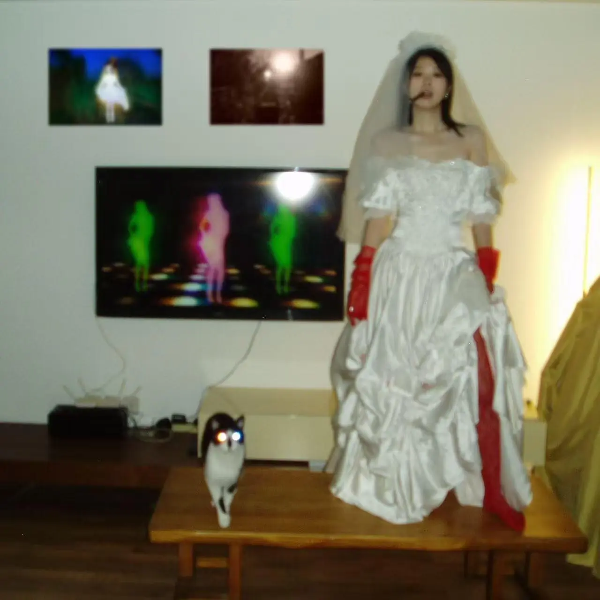

Album#50
Is it gonna happen again?



在 HOPICO 的 我把 2026 最爱的三位女歌手请来同台演出！陈静琳x汪川xjody 了解到的一張電子樂専輯 (推薦一看)。喜歡 jodi 的聲音，也喜歡專輯的編曲，編曲聴起來很丰富，有很多變化和細節，還蠻耐聴的。
问：专辑主题围绕“循环”展开，对您来说，音乐如何成为探索这种“循环”的一种工具？
答：这个主题并不罕见，但也确实是我最想要对宇宙抛出的质问。一句简短的“Is it gonna happen again?”饱含着复杂的情绪，我可以用恐惧发问，也可以用愤怒，也可以带着想要停止的渴求弱弱的发问……所以你可以在我的编排包括曲目排序中听见递进的情绪，《mononoaware》从想要探寻开始，《Cocoon》《FOREVER》《褶皱》是怀疑和不安的，《Hush!》是带着恨的，《letter》和《HUSH-remix》是坚定又自信的，再到结尾两首又陷入了怀疑和恐惧的循环。我希望大家完整的收听时能像进入了我编排的舞台剧里，去感受我情绪的循环。
TRACKLIST
mononoaware
I'm using my imagination
Is it gonna happen again
desk is illusion, bed is illusion, art is illusion
only pain can be real
You are fucking my mind inside
I could not deny that
my mind decide
You can be mine
Ei-oh Ei-oh
过去和未来都不存在
我现在 只要你想我爱你 就爱
你敢不敢 掀开我
这意识的网脉
Is it your everything?
I saw you everything
(Do you hear this scream?)
To be honest it is my everything
(You see me in plain sight)
You made me, made me create a lie.
(Don't you see your own reflection)
You gave me, gave me, gave me this knife
(I dream about you every night)
I'll kill you, kill you every time
You guess was right
You are fucking my mind inside
I could not deny that
my mind decide
You can be mine
Ei-oh Ei-oh
过去和未来都不存在
我现在 只要你想我爱你 就爱
你敢不敢 掀开我
这意识的网脉
揭谛揭谛, 波罗揭谛
(Is it your everything?)
波罗僧揭谛, 菩提萨婆诃
(I saw you everything)
揭谛揭谛, 波罗揭谛
波罗僧揭谛, 菩提萨婆诃
mononoaware 應該是日語「物の哀れ」的羅馬音，是對事物無常與短暫之美所產生的溫柔感傷或感動；常指因明白美好終將消逝而生的感受。
喜歡在几聲吶喊 (scream) 後，在最後那次吶喊時節奏變快的处理，像是豁了出去，做出了什麼决定。
最後的「揭谛揭谛, 波罗揭谛 / 波罗僧揭谛, 菩提萨婆诃」出自 般若波羅蜜多心經，大概的意思是 「去吧！去吧！去彼岸吧！眾人一起去彼岸吧！成就菩提吧！」。
第一首的歌詞就出現了專輯名「Is it gonna happen again?」， again 這個詞還會在好几首歌裡反復出現，也是專輯的一個主題，但一次次的反復裡，似乎衹有痛苦留了下來 (「only pain can be real」)。
Cocoon
You know me so far
Just like a new start
I threw my best card
Yeah I gonna mumbles incoherently
You think endlessly
Good start
Glistening teardrops
Choked all the curses meant to flee
Drown in the silencing
Forget those that aren’t coming from my heart
Am I too smart?
Am I too far?
I gonna break it
Until I see it
I'm way too far
I'm way too smart
I gonna see it
Until I break it
break it
Whenever you emerge
These shards rewire my neural verse
I know the genesis of my ache
Don't know how to express it
I lost it
in the new tongue!
subtle
invisible
is the most destructive
All my pieces are called in
Am I too smart?
Am I too far?
I gonna break it
Until I see it
I'm way too far
I'm way too smart
I gonna see it
until I break it
Am I too smart?
Am I too far?
I gonna break it
until I see it
I'm way too far
I'm way too smart
I gonna see it
until I break it
break it
I'm nopt my thoughts
I am the shore
I'm in a flow
I am more
Cocoon 是茧的意思，或許 jody 覺得自己像是被包裹在茧一般，看不清自己，有些迷失自己，「Am I too smart? / Am I too far?」，於是她想「break it / Until I see it」她想「see it / until I break it」，
喜歡編曲中那個流動的聲音，像是遊戱厅裡遊戱機的灯亮起時的聲音。
FOREVER
Go!gotta go
I gotta put you on 循环里的缺陷
做一个新的选择
打开仍然还是旧的页面
我打开你的信 猜你冰冷指尖
在阅读你的心 墨水都快搁浅
Go!gotta go
I gotta put you on没有我的危险
七月的暴雨冲刷了泥土
却又淤堵我鼻腔
痒痒的酸酸的通过甜的爆珠
承受着冰凉
我没法掩饰它的存在
瞬间如此变得漫长
这可以变的漫长
How long does it last?
How long does it last?
So how far
How long is forever?
可以-变得-漫长
Does it -does it , How long?
So, so, How long?
So, so, Do-does it?
How long? So how-how-how far?
So, so, How long is forever?
How long?So, so, How long?
Chop~
How long?
How-how far?how long?
So, so, Forever
Chop~
Go!gotta go
I gotta put you on 循环里的缺陷
做一个新的选择
打开仍然还是旧的页面
I wish this endless rain could play some trick
And that its chill would surely make me sick
So I could blame on you, for you 也无所谓
Look in your eyes and say
Don't let this fade away
(How long?So so)
我看得见遥远的时间
(How long?So so)
所以我们永远也不会说再见
How long does it last?
(我看得见遥远的时间)
How long does it last?
So how far
(所以我们永远也不会说再见)
How long is forever?
Forever
Forever
Forever
Forever
Forever
For—ev⸺er
我看得见
我看得见
遥远的时间
For—ev⸺er
我看得见
我看得见
我看得见
For⸺ev
喜歡這首的節拍、安靜的前奏過渡到快速的節拍的处理、像是故障一樣的人聲切片、還有曲子最後從快速的節拍變慢的处理。最後變慢的处理給我一種時間變慢拉長的感覺，也許沒有永遠，但還是希望能時間能盡可能的漫長。
褶皱 (interlude)
You will have my eyes
In the starlight
But I never want this to happen again
You will have my eye
In the starlight
I swear I never want this to happen again
Oh It's gonna happen again, again,
gonna happen again
It's gonna happen again
Oh It's gonna happen again
It's gonna happen again
like we did last summer
Have I flown into the collective unconscious?
If so… may I take a look into yours?
Have I flown into the collective unconscious?
If so… might I gaze upon yours?
keep quiet !
所有旋转在
流水之中
无非都是留在
没有全貌的
无聊的
Different dimension
Siddhartha
快睡着了吧
我在帮你清理
Meditation….
进入星光层
进入星光层
Meditation
I can hug you
I can hug you
I can hug
You
Can hug
You
I can hug
You
I can
can hug
I
U
HUG U
You will have my heart
lying apart
I never want this to happen again
You will have my heart
lying apart
I swear I never want this to happen again
喜歡前奏，有點失真的感覺，最後采樣了一小段德彪西的 Clair De Lune (月光) 也很美。
Hush!
You've made me harsh
This distance growing daily, lately
Hush! When I hug you, feel my rhythm, babe
Will you do the same heartbeat as I do, maybe
the way we do is not what I want to, baby
You've made me harsh
This distance growing daily, lately
Hush! When I hug you, feel my rhythm, babe
Will you do the same heartbeat as I do, maybe
the way we do is not what I want to, baby
You've made me harsh(when I hug you)
You know-
You've made me harsh(when I hug you)
You know-
You've made me harsh(when I hug you)
You know-
You've made me harsh(when I hug you)
~~
(when I hug you)
You know me, Hush!
(when I hug you)
You know me, Hush!
(when I hug you)
You know me, Hush!
(when I hug you)
You know me, Hush!
Hush!I'm growing harsh, will you do
When I hug, growing harsh, you do
You've made me harsh, I'm growing harsh, will you do
When I hug, growing harsh
Hush!I'm growing harsh, will you do(you want
When I hug, growing harsh, you do
You've made me harsh, I'm growing harsh, will you do(you want
When I hug, growing harsh
You've made me harsh
(You know me, made me harsh)
Don't made me suspicious
(You know me, made me harsh)
Growing harsh than⸺we do
You've made me harsh than -will you,
I'm growing harsh, will you do?
Will you leave?
When I hug, growing harsh, will you do
Will you leave?
Growing h-h-harsh!!!
If we're meant to end in ruin
Well you made me do
Will you l-l-leave?
Growing h-h-h-h-harsh
Will you l-l-l-l-l-l-leave ?
Will you leave leave leave leave leave leave leave
Growing harsh harsh harsh harsh harsh harsh harsh
Will you hear hear hear hear hear hear hear
I'm hushed hushed hushed hushed hushed hushed
Hushed
大概是專輯裡旋律最容易讓人記住的一首，反反復復的 harsh、hush、hug 聴著很洗脑。節奏快慢、強弱的變化以及 jodi 的人聲演唱，聴起來很爽。
Letter
哎哟
你是真的更了解我
哎哟 全是我的
哎哟 你是真的想告诉我
EI-ei
I'm on the way
("How u wanna go to heaven?")
yet I feel like I'm staying
("As you really know me")
I'm changing the time
("How should I get to know me?")
I rewrote the days
Oh J I'm on my way
这时间太慢
I'm changing the time
Are u feeling ok?
I talk about your mind
你会承受的了一切
But I hope you find the courage to have the right to
TO-TO-TO
Run away
I give you all my vision
Run away
I'll stand against invasions
Run away
No matter your decision
Run away run away run away
Run away
I can see ya
Run away
Oh J I'm on my way
这时间太慢
I'm changing the time
Are u feeling ok?
I talk about your mind
你会承受的了一切
But I hope you find the courage to have the right to
Run away
Run away
Run away
Run⸺
哎哟
你是真的更了解我
哎哟 全是我的
哎哟 你是真的想告诉我
~
Eun away
Run away
I can see
I can see ya
Run away
Run away
I can see
I can see ya
I give you all my vision
I'll stand against invasions
No matter your decision
EI-ei
Run away
"How u wanna go to–"run away
"As you really–"I can see ya
"How should I get to–"run away
喜歡中間那段很強烈的編曲。
HUSH!(rui Remix)
Hush!I'm growing harsh, will you do(you want
When I hug, growing harsh, you do
You've made me harsh, I'm growing harsh, will you do(you want
When I hug, growing harsh
You've made me harsh
This distance growing daily, lately
Hush! When I hug you, feel my rhythm, babe
Will you do the same heartbeat as I do, maybe
the way we do is not what I want to, baby
You've made me harsh
This distance growing daily, lately
Hush! When I hug you, feel my rhythm, babe
Will you do the same heartbeat as I do, maybe
the way we do is not what I want to, baby
You've made me harsh⸺
You know-
You've made me harsh⸺
You know-
You've made me harsh⸺
You know-
You've made me harsh⸺
~~
You've made me harsh
This distance growing daily, lately
Hush! When I hug you, feel my rhythm, babe
Will you do the same heartbeat as I do, maybe
the way we do is not what I want to, baby
You've made me harsh
This distance growing daily, lately
Hush! When I hug you, feel my rhythm, babe
Will you do the same heartbeat as I do, maybe
the way we do is not what I want to, baby
You've made me harsh(when I hug -
You know
You've made me harsh⸺
You know
You've made me harsh⸺
You know
You've made me ha⸺
~~
(when I hug you)
You know me, Hush!
(when I hug you)
You know me, Hush!
(when I hug you)
You know me, Hush!
(when I hug you)
You know me, Hush!
Hush!I'm growing harsh, will you do
When I hug, growing harsh, you do
You've made me harsh, I'm growing harsh, will you do
When I hug, growing harsh
Hush!I'm growing harsh, will you do(you want
When I hug, growing harsh, you do
You've made me harsh, I'm growing harsh, will you do(you want
When I hug, growing harsh
You've made me harsh
(You know me, made me harsh)
Don't made me suspicious
(You know me, made me harsh)
Growing harsh than–we do
You've made me harsh than -will you
I'm growing harsh, will you do?
Will you leave?
When I hug, growing harsh, will you do
Will you leave?
Growing h-h-h-h-h-h-h-h-h-h-h-h-harsh!!!
Remix 比原版聴著更爽，編曲很丰富，像是夜店裡 DJ 放的電子舞曲，讓人想跟著跳動、攞動身體。中間有段強度逐漸加強的，聴得真是太爽了。
keep it in the fridge
keep it in the fridge, fridge, fridge
I mean keep it in the fridge, fridge, fridge
Lock in lock in lock in
Lock in lock in lock in
I'm gonna waste it all
留下来今夜我们不再醒来
但外面真的太冷了
你看穿我心事on my birthday cake
Hey! U! You want me
I can't even wait to hear you say this too
Are you going to waste it too?
Why don't we freeze it for good?
I mean keep it in the fridge
K-k-keep it in the fridge
(You want me)
Keep it in the fridge
Lock in lock in lock in
(You want, you want me)
I said keep it in the fridge
L-l-l-lock in the fridge
(you want me)
I said keep it in the fridge
Lock in lock in lock in
Why 我执意将你的现在连同我的一起留下来
只怪溶化的太快窗外的天气也变得太快
If I spend my life on it
Will it stay true
Was it love or something… was what made me do?
I'll pray that……was what made me do
什么都留不下来
什么都留—怎么留下来
As long as I know you feel the same
(Is it gonna happen again?)
As long as I know you feel the same
(This!)
I'm I'm
我执意freeze it for
Keep it in the fridge-ei-ei
Freeze it for good
(You want, you want me )
Freeze it for
Keep it in the fridge-ei-ei
Freeze it for good
Hey! U!
我执意将
Keep it in the fridge(me)
Freeze it for good
Hey! U!
Freeze it for
Keep it in the fridge(me)
Freeze it for good
I hope-I hope
Keep it in the fridge, fridge, fridge
Lock in lock in lock in
Keep it in the fridge
I love you
(Gonna, gonna happen again)
But I can not let you know
So I keep it in the-fridge
(gonna happen again)
For fear that nothing will remain
(Does it-
Keep it in the-)
Again?)
It is gonna happen again)
Yet I am not sad
Yet I am not sad—
如果把那些變化快的東西鎖進冰箱裡，它們會變化得慢點嗎？例如愛你的心？
Again, again, again(demo)
Can't relate to it without you
Can't relate to it without you
Can't relate to it without you
Can I break this cycle through you
Can't relate to it without you
Can't relate to it without you
Can't relate to it without you
Start being fine again
Start being fine again
Start believing it's high noon
Everything always come back bad soon
Is it a feeling?
Start being fine again
Start believing my thoughts are true
Everything will always come back to you
The more I know you the more I know myself
The more I know you the more I know myself
It's just a feeling it's not about you
It's just a feeling it's not about you
Not about you
唉
唉
唉
唉
唉
喜歡裡面安靜的吉他，讓耳朵稍微休息了些。